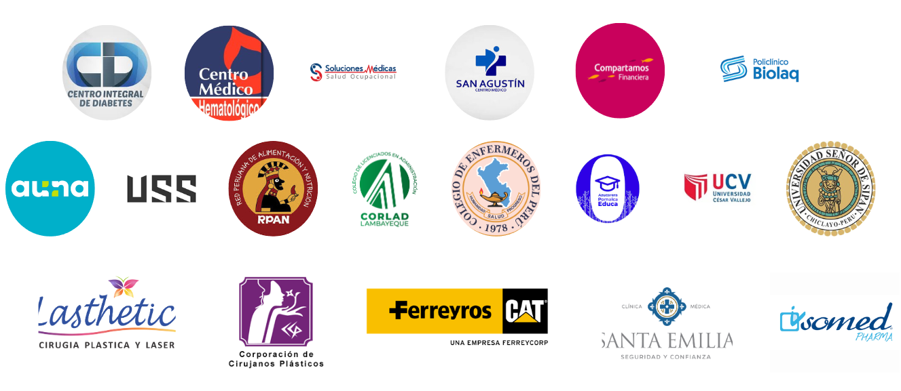
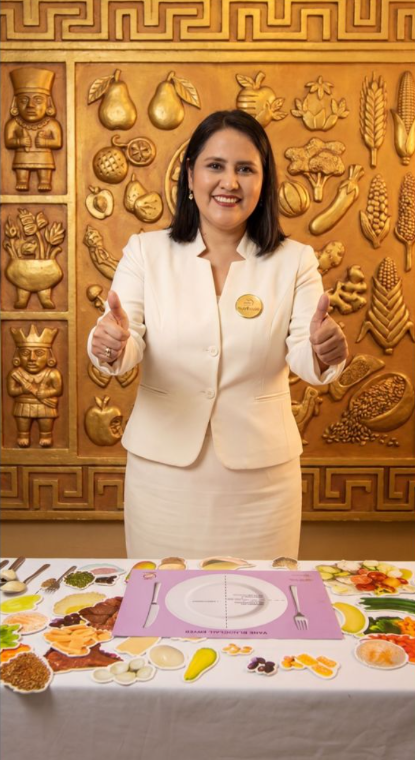

BIENESTAR QUE TRANSFORMA A TU EQUIPO
Potenciando la productividad empresarial a través de la salud integral.
Los retos de salud en las empresas
Actualmente, el 30% de peruanos tendrán problemas de obesidad y sobrepeso, y esto impacta directamente en el entorno laboral y la rentabilidad.
Ausentismo y Cansancio
Ausencia por enfermedades prevenibles y baja energía debido a malos hábitos alimenticios.
Estrés Laboral
Aumento de ansiedad y estrés por la falta de una cultura de prevención en salud.
¿Cómo transformamos tu organización?
Ofrecemos soluciones personalizadas que optimizan la salud de los colaboradores e incrementan la productividad.
Diagnóstico
Evaluación de hábitos alimenticios y bienestar general de tu equipo.
Programas a Medida
Planes nutricionales adaptados y actividades físicas o mentales integrales.
Capacitaciones
Talleres educativos sobre prevención de enfermedades y cocina saludable.
¿Por qué invertir en la salud de tu equipo?
Con un enfoque localizado en la realidad cultural peruana, generamos impacto medible.
Resultados Corporativos
- Aumento de la Productividad: Empleados saludables rinden mejor.
- Mejor Clima Laboral: Los programas fortalecen la cohesión del equipo.
- Retención de Talento: Aumenta la satisfacción y fidelización.
- Reducción de Costos: Menor gasto en licencias y atenciones médicas.
Nutrihouse para tu Empresa
Plan Inicial
Evaluación nutricional diagnóstica y taller introductorio de bienestar para los colaboradores.
Plan Integral
Programa de seguimiento continuo con un enfoque unificado nutricional, físico y mental.
Experiencia Premium
Solución 360° que integra eventos de salud (Ferias), talleres y consultoría corporativa continua.
Respaldados por sólidas alianzas institucionales
Con resultados demostrados en organizaciones de primer nivel en el Perú.
+9
Años de experiencia en el mercado
B2B
Especialistas en Salud Corporativa

Beneficios Exclusivos
- Tarifas preferenciales para colaboradores
- Actividades conjuntas y Ferias de Salud
- Charlas y talleres educativos in-house
- Acceso total a programas de bienestar
Mucho más que un proveedor
En Nutrihouse buscamos ser un aliado estratégico. Formar una alianza institucional con nosotros no solo significa tercerizar un servicio, sino aportar valor agregado directo a la vida de tu talento humano, garantizando flexibilidad y servicios innovadores.

Lic. Karina Sobrino
Fundadora & Directora
Especialista en nutrición clínica y salud corporativa. Más de 20 años de experiencia. CNP: 1276.
Respaldo y Confianza
El éxito de los programas de salud empresarial depende de quién los lidera. Contamos con un equipo multidisciplinario experto en bienestar corporativo, liderado por la Lic. Karina Sobrino, garantizando resultados sostenibles y basados 100% en evidencia científica.
¡Es hora de dar el primer paso hacia una empresa más saludable!
Contáctanos para una consulta y empieza a mejorar el clima laboral, la productividad y el bienestar de tu equipo hoy mismo.
Presencial, Online o In-House
Lic. Karina Sobrino (Fundadora) | Nutrición Basada en Ciencia